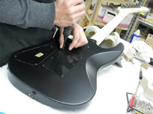

Date:2012.2.10
ソニックが生誕20周年を迎えた2011年は、記念タイトル「ソニック ジェネレーションズ」の制作やそれに付随するイベントのみならず、音楽関連でも様々な商品化などを行なう機会がありました。
その中で、私が1998年以降所有しているソニックギターの商品化もESPとSEGAのコラボレーションの下、2012年1月末までの予約受付という完全受注生産という形で実現しましたが、当初の想定を圧倒的に上回る予約数を頂戴しまして、嬉しい誤算となりました。
そのソニックギターの第一次出荷分の組み込みを行なう日に、東京郊外にあるESPの工場にお邪魔しまして写真を撮ったり、認定書にサイン入れをしたりしてきましたので、その様子をレポートしたいと思います。
この施設は、カスタムオーダーの拘りの一本から、今回のソニックギターのようなものに至るまで、色々なラインナップのギター・ベースを制作している他、流通の拠点でもあり、国内外への出荷に至るまでの全ての工程を一か所に集約した工場でした。ひととおり見学をさせて頂いた後、「こちらです！」と紹介されたのは……
出迎えてくれたのは、既にボディとネックが組みあがった状態のソニックギター！15本も同じものが並ぶのを見ることは、まずあり得ないことなので、圧巻でした。
どれどれ、とボディをよく見ると……東京ゲームショウなどで展示したサンプルギターを確認した後に修正依頼を出した角の部分の処理も、ソニックの目の色も、オリジナルに忠実になるように変更されていました。
そうするうちに、最初の工程が始まりました。定規のようなテンプレートを使用して、ボディ裏のプレートを固定するためのネジ穴を開けた後、トレモロユニットのスタッドも打ち込まれました。
裏から、既に結線がされているボリュームやトーンなどのポッド類を入れ込んで、ノブを固定した後、ケーブルを挿すジャックや、トレモロユニットのスプリングを引っ掛けるパーツも取り付けられました。
続いてはピックアップの取り付けです。エスカッションと呼ばれるピックアップを吊り下げる「枠」に付けることも多いのですが、私のソニックギターは、ボディにダイレクトマウントされているので、この写真のように、ピックアップの裏側には緩衝材がアタッチされています。ピックアップのマウントの際は、弦との距離が音のバランスに繋がるので、その調整は真剣そのもの。
別なところでは、トレモロユニットが取り付けられるのを待っていました。ピックアップにしても、トレモロユニットにしても、決して大きくはないパーツですが、同じものがこれだけ並ぶのは圧巻です。ちなみに弦は丸められていない、ストレートなものが張られています。よじれがないものは良いですね。
トレモロユニットが仕込まれた後には、弦が張られます。この時点では、ナットもヘッドストック上のテンションバーもありません。
ヘッドの裏には、このようにSEGAとのコラボレーションを示すマークも入っていますよ！
次にようやく弦の振動を拾うピックアップと、ボリュームなどのポッド類の結線です。熱による本体へのダメージを与えないよう、ボディの大半を隠して、作業に必要なところだけを出しての作業でした。

さて、工場長のところに最初の一本が廻ってきました。彼の手によって、ヘッドストックのテンションバーをマウントするためのネジ穴が開けられ、テンションバーが取り付けられました。これで必要なパーツは、全て揃いましたね！

いよいよ、最後の調整です。ネックを外して、ネックや弦高などの仕込みの調整を行ない、ボディ裏のプレートを付けたら、いよいよ完成ですね！
ふと横にあったギターが気になりましたが、海外向けの新しいヘッドシェイプもカッコ良いですね！このギターもソニックギター同様、日本国外へ輸出されることがあるものなので、ブラックニッケルというカラーのパーツが使用されています。
余所見をしているうちに「出来ました！」の声が！パチパチ！
というわけで、ESP社長の鈴木氏と思わず記念撮影を。
当初、予定にはなかったのですが、今回のソニックギターには、このような付属品も用意することが出来ました！特製のクロスと、青と赤のソニック柄のピック、それと認定書です。ピックの色は、ソニックの青と、シューズの赤ということで選びました。
さて、最後は出荷の準備です。まずは仕上がったギターを袋詰めにしてから、折って……更に折って……
付属品も忘れずに挟み込んだ後、いよいよ箱詰めです。
というわけで……入りました～♪
何だか、とても嬉しそうな表情をしておりますね。
このソニックギターは、いよいよ今週から順次出荷されるとのこと。
人前に出てから10年以上経ってから、商品化されることになったソニックギターですが、手にされる方は、是非、楽しんでプレイしてもらえれば、と思います。
最後に、イー・エス・ピー社の林さんからソニックギターのファンのみなさまにメッセージが届きましたのでご紹介します！
20年近く前に瀬上氏をモニターに迎え、数多くのギターを手掛けてきました。14年前に製作したソニックギターが今回発売されたことに、自分自身が驚き、そして嬉しく思います。是非大切にしてあげてくださいね。
株式会社イー・エス・ピー マーケティング開発室 林宏樹